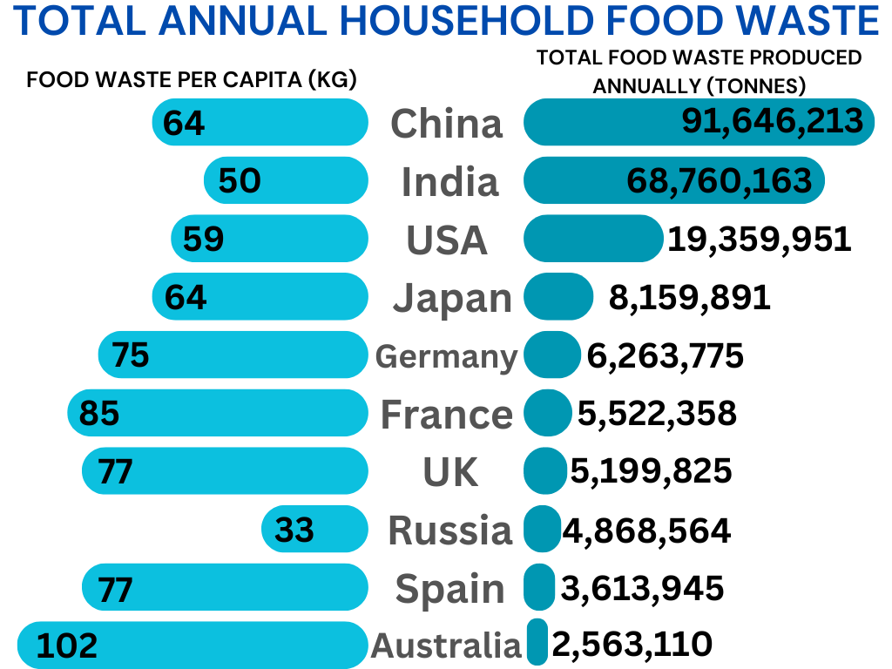

| Department of Economic and Social Affairs
#SDG 2 End hunger
Little to no progress has been made in reducing anaemia worldwide since 2000
About 25% of the world's population currently has anaemia.
Malnutrition in children
Food wastage throughout the world
Goal 2: End Hunger by 2030
Goal 2 focuses on creating a world free of hunger by 2030. Unfortunately, hunger and food insecurity have been rising since 2015, worsened by global crises such as the pandemic, conflicts, climate change, and growing inequality.
Rising Hunger and Food Insecurity
By 2022, approximately 735 million people—9.2% of the world’s population—were suffering from chronic hunger, a sharp increase compared to 2019. Furthermore, 2.4 billion people faced moderate to severe food insecurity, meaning they lacked regular access to enough nutritious food. This figure represents an alarming rise of 391 million people since 2019.
The Impact of Hunger on Development
Hunger and malnutrition severely hinder sustainable development. People affected by extreme hunger are often less productive, more susceptible to disease, and trapped in a cycle of poverty that’s hard to escape. In 2022, 148 million children experienced stunted growth, and 45 million children under age 5 were affected by wasting, both of which have long-term health consequences.
Future Projections
If current trends continue, over 600 million people will still be facing hunger by 2030, making the goal of achieving zero hunger a major global challenge. Those experiencing moderate food insecurity often struggle to maintain a healthy, balanced diet due to financial or other resource limitations.
Why Is Hunger Increasing?
Global hunger levels have returned to those not seen since 2005, with food prices remaining higher in many countries than in the period from 2015 to 2019. Conflict, climate shocks, rising living costs, civil insecurity, and reduced food production are major contributors to food scarcity and soaring prices.
The Importance of Agricultural Investment
Investing in agriculture is crucial for reducing hunger and poverty, improving food security, creating jobs, and building resilience against future disasters. These investments, particularly in rural areas, can play a significant role in alleviating food scarcity and improving livelihoods.
Why Should You Care?
Ending hunger is not just about ensuring food for everyone—it’s about improving global health, education, equality, and economic stability. A world with zero hunger is a world with greater social development and human potential. Achieving this goal is key to making progress on other sustainable development goals, such as education, health, and gender equality.
How Can We Achieve Zero Hunger?
Ending hunger requires a multi-dimensional approach. This includes social protection programs to ensure safe, nutritious food, especially for children, and transforming food systems to be more inclusive and sustainable. Both rural and urban areas need targeted investments, along with policies that improve access to food and help people build better livelihoods.
What Can You Do to Help?
You can contribute by supporting local farmers and markets, making sustainable food choices, reducing food waste, and promoting good nutrition for all. Additionally, as a consumer and voter, you have the power to push businesses and governments to make the necessary changes to achieve zero hunger. Get involved in conversations about hunger—whether on social media or in your community—because every action counts.